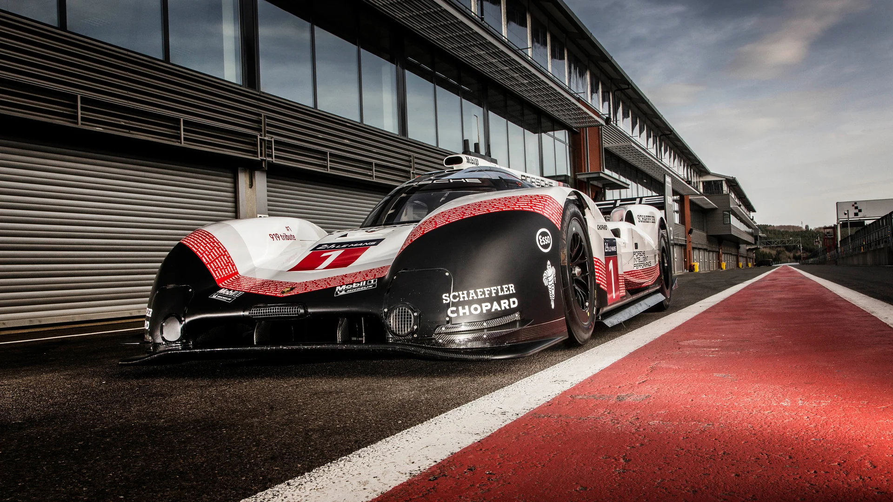
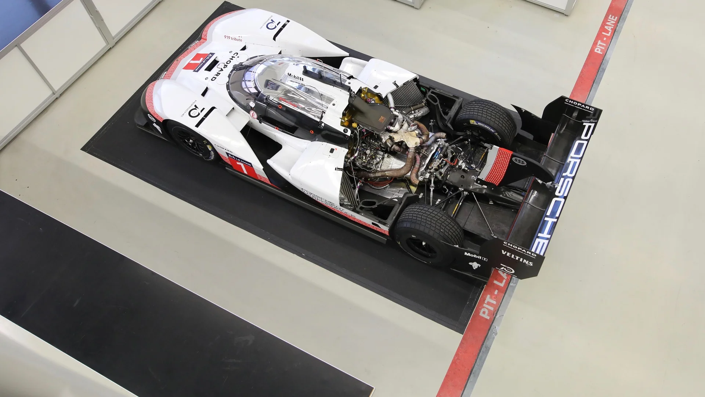
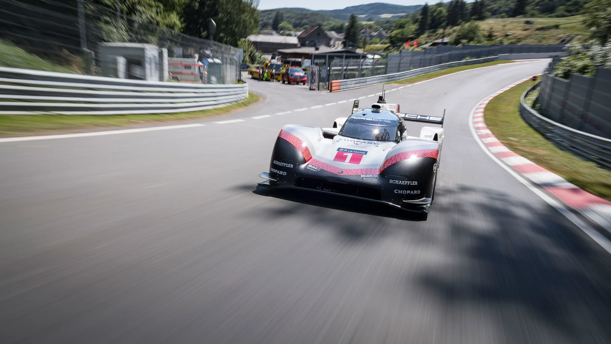
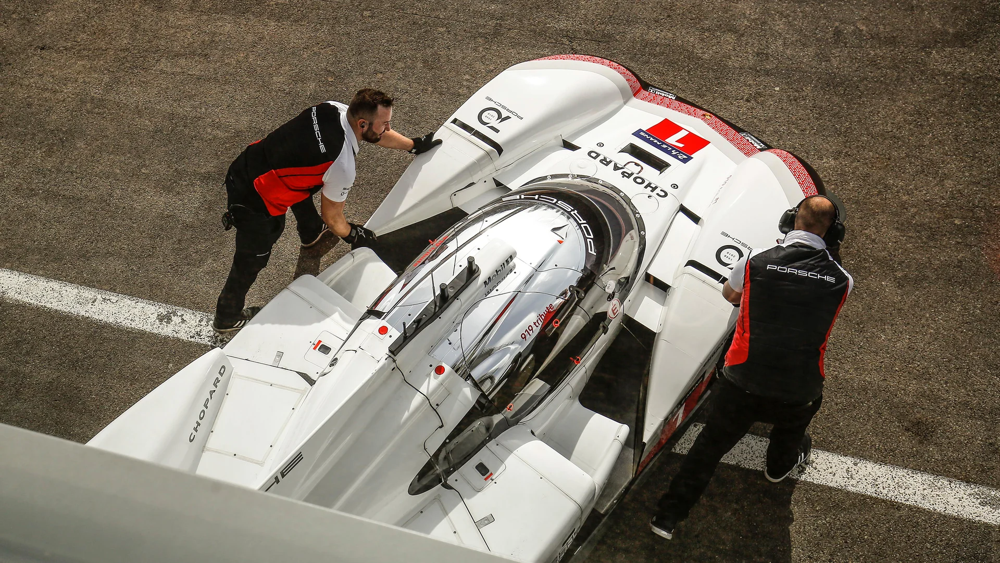
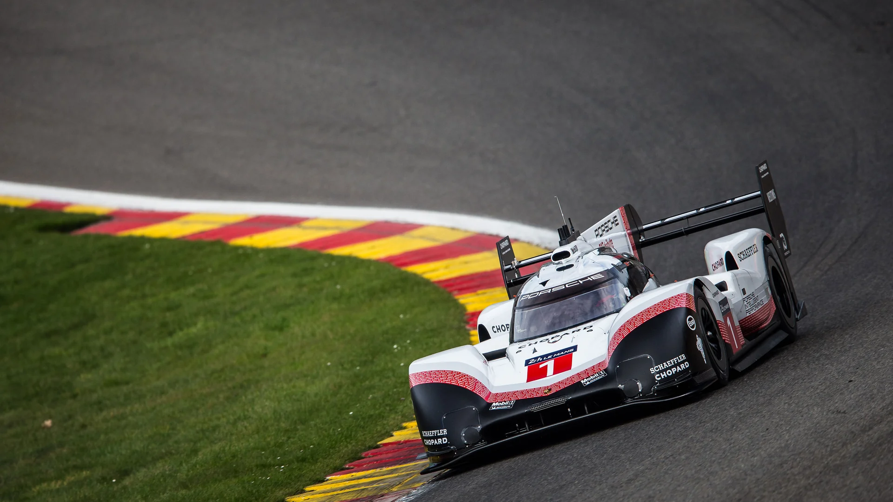
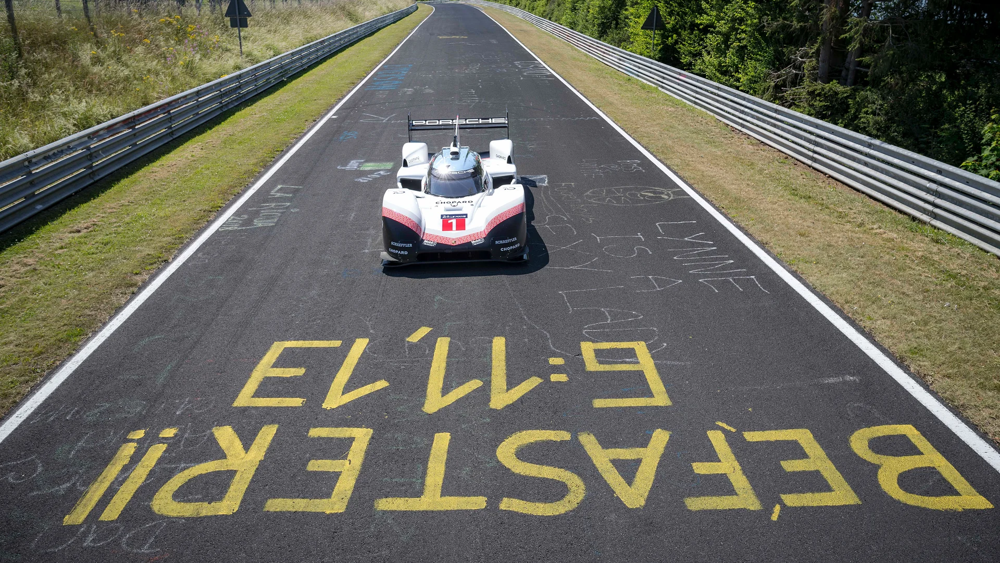

The Regulated Prototype Era
Bound by strict per-lap fuel-flow meters and energy caps, the 9R9 2.0-litre V4 was pegged below 500 hp, capping combined system output near 900 hp.

Freed from WEC regulations, the 2.0-litre V4 turbo-hybrid unleashes 1,160 hp. Stepping off the triple Le Mans throne to author the final speed chapter at Spa and the Nürburgring.
From 2015 to 2017, the Porsche 919 Hybrid claimed three consecutive Le Mans 24 Hours victories and FIA WEC double world titles. Upon retiring from the premier class, Weissach removed fuel-flow, energy-allocation, and aerodynamic limits to reveal its true physical ceiling.
Bound by strict per-lap fuel-flow meters and energy caps, the 9R9 2.0-litre V4 was pegged below 500 hp, capping combined system output near 900 hp.
Across 34 starts in four seasons, the 919 secured 17 victories, 20 pole positions, and 43 podiums—sweeping three straight Le Mans wins and WEC Manufacturers' and Drivers' titles.
Retaining the championship chassis and core powertrain hardware, software calibration and active aero alone lifted output to 1,160 hp while trimming 39 kg.
“We didn't want to see the most innovative race car of recent times disappear into a museum right after fulfilling its mission; the 919 Tribute Tour is our tribute to those remarkable years.”
FRITZ ENZINGER · VICE PRESIDENT LMP1, PORSCHE


Retaining every WEC mechanical component, the 9R9 2.0-litre 90° V4 single-turbo engine delivers 720 hp once E20 race-fuel flow limits are removed—paired with front braking recuperation and exhaust-gas generation in an 800 V closed loop.
“This time we weren't held back by regulations, only by resources. Further developed and tuned, it broke a Formula 1 track record—for an engineer, that is a dream come true.”
STEPHEN MITAS · CHIEF RACE ENGINEER LMP1, PORSCHE


Width and height remain 1,900 × 1,050 mm, while a greatly enlarged front diffuser extends overall length to 5,078 mm; removing the headlights cleans up leading-edge airflow ahead of the prototype's first front-and-rear hydraulic DRS.
Switch live between 2017 WEC homologation and 2018 EVO unrestricted mode to inspect the physical envelope of dual-end hydraulic DRS, 440 hp front-axle e-boost, and four-wheel brake-by-wire recuperation.

WEC spec caps speed at 335 km/h and forbids active DRS · EVO deploys front + rear DRS at >= 140 km/h · KERS cuts fuel injection immediately

At 10:23 on 9 April 2018—in 11 °C ambient air and 13 °C track temperatures—Neel Jani lapped the 7.004 km Spa-Francorchamps circuit at an average speed of 245.61 km/h, beating the 2017 Formula 1 pole time by 0.783 seconds.
With identical block, gearbox, and battery cell hardware, unlocking fuel flow and dual-end DRS lifted the 919 Evo 12 seconds clear of its 2017 World Championship pole—and 0.783 seconds ahead of Lewis Hamilton's Formula 1 qualifying benchmark.
“The 919 Evo is definitely the fastest car I have ever driven. Everything happens in a flash on a flying lap, and the grip level goes beyond anything I had ever experienced in a race car.”
NEEL JANI · 2016 LE MANS WINNER / SPA 1:41.770 RECORD DRIVER

On the morning of 29 June 2018, Timo Bernhard piloted the 919 Hybrid Evo around the 20.832 km Nürburgring Nordschleife at an average speed of 233.8 km/h and a peak of 369.4 km/h.
620 hp · Avg speed > 200 km/h · 1000 km Qualifying
1,160 hp · Avg 233.8 km/h · Peak 369.4 km/h
“Stefan Bellof is and remains a giant for me. Thanks to the aerodynamics and downforce of the 919 Hybrid Evo, today I got to know the Nordschleife in a completely new dimension.”
TIMO BERNHARD · TWO-TIME LE MANS WINNER / NORDSCHLEIFE 5:19.55 RECORD DRIVER
From the triple Le Mans triumph across Belgium, Germany, the United Kingdom, and California.
Nine carbon monocoque chassis were built across the 919 programme; a single car was converted to unrestricted Evo specification.
Beyond three Le Mans crowns, the 919 Hybrid Evo leaves two historic timing marks—1:41.770 at Spa and 5:19.55 at the Nordschleife—from a 2.0-litre four-cylinder hybrid.